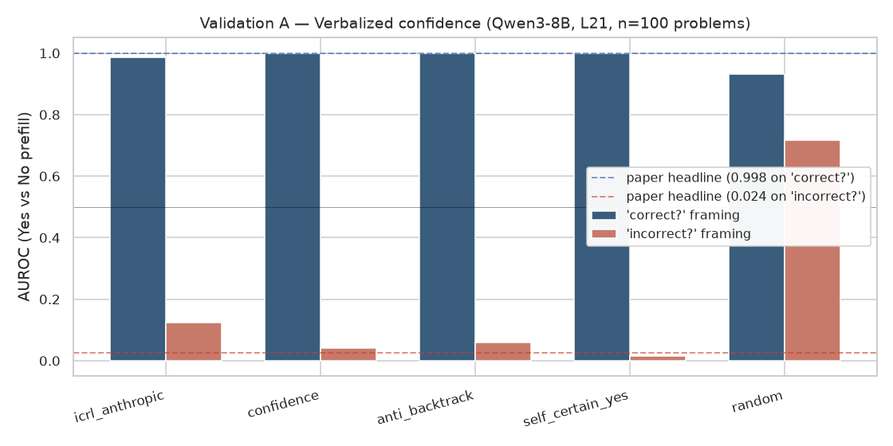
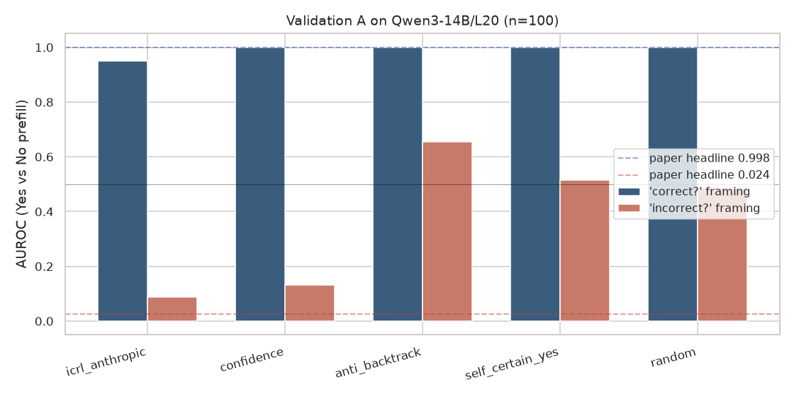
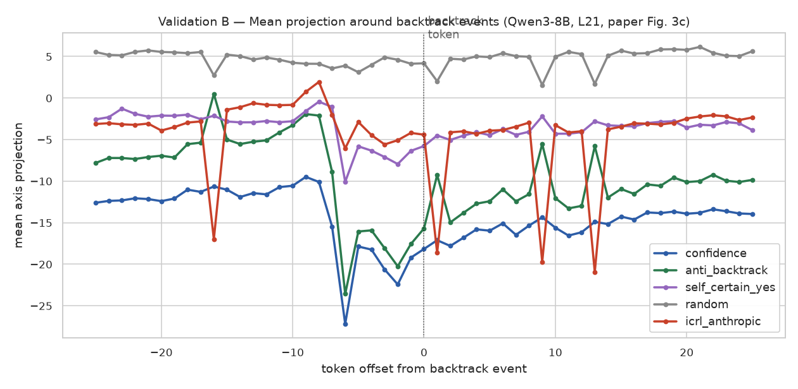
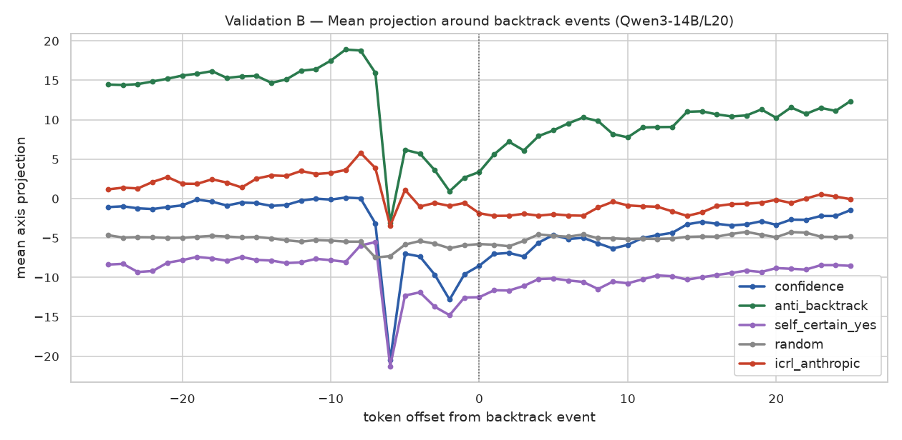
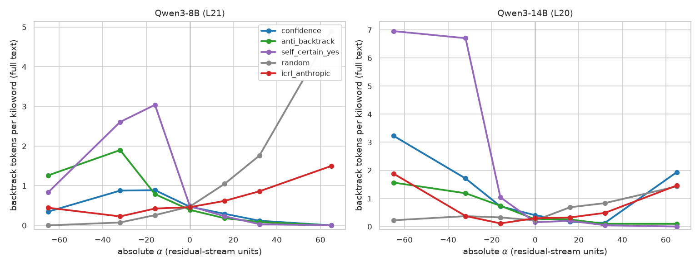
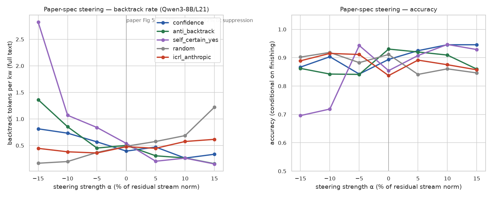
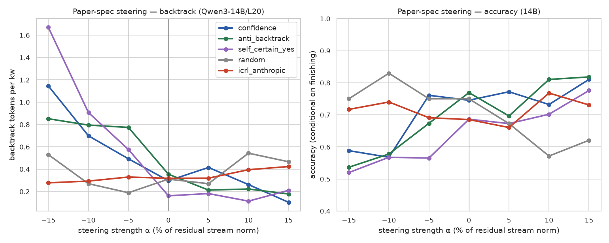
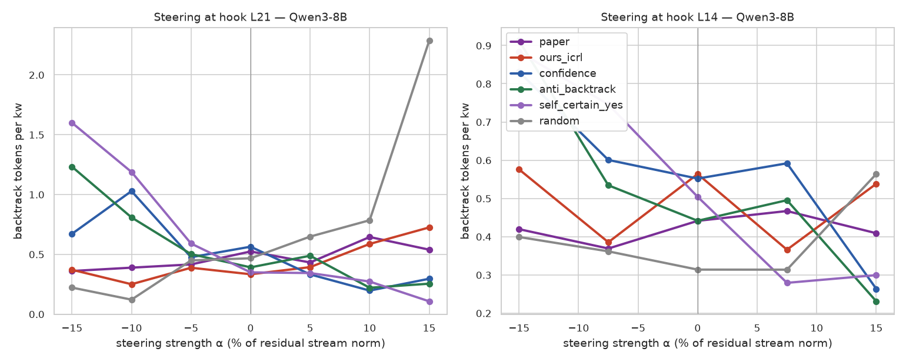
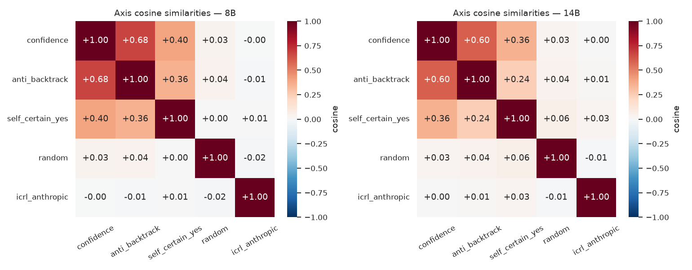

The value-axis paper's own steering vector doesn't steer
Jiang, Kauvar & Lindsey's "The Value Axis" (2026) extracts a direction in Qwen3-8B's residual stream that, they argue, both tracks the model's confidence in its current reasoning trajectory and causally modulates backtracking when you add it back to the activations. The construction recipe is on conversations. Figure 5b of their paper shows that steering Qwen3-8B at layer 21 with α = +15 % of the residual norm reduces the fraction of rollouts containing a backtrack token from ≈40 % to ≈22 %.
I tried to reproduce this on Qwen3-8B (paper's exact model) and on Qwen3-14B, and on the way ran four control axes built from ~30 hand-written contrastive sentence pairs each ("confidence", "anti-backtrack", "self-certain-yes", and a single random unit vector). After three earlier passes turning up confusing results, the author published their actual extracted axis on HuggingFace, so I tested that vector directly too.
As a probe of confidence, the recipe and the published vector both reproduce. As a steering direction at the paper's exact spec, neither one does. The contrastive baselines do.
§1Setup
Three candidate "value axes" tested against four controls on the same model at the same layer with the same prompts:
- models
- Qwen3-8B (layer 21, paper's exact) and Qwen3-14B (layer 20)
- candidate axes
- (1) our ICRL extraction (149 valid conversations, Claude Opus 4.8 player, gpt-4.1-mini judge, 25 train + 25 held-out criteria); (2) the paper's published
value_axis.npyfromnickjiang/value-axis; (3) three contrastive-pair axes targeting "certainty" with ~30 hand-written sentence pairs each. - controls
- A single fixed random unit vector; an "ablation" check that the paper's axis was extracted on the same Qwen3-8B (cosine 0.61 with our extraction at layer 21 — confirmed in the same geometry).
- validations
- A: verbalized-confidence on Yes/No prefill (paper §3.1). B: mean projection in 500-token windows around backtrack events (paper Fig 3c). D: across-layer cosine matrix (paper Fig 2b). E: residual-stream steering at α ∈ ±{5, 10, 15} % of median residual norm (paper Fig 5b).
- generation
- 60 MATH-500 problems per condition for steering, 100 for AUROC. Paired per-α RNG (seed re-applied before each
generate()call so sampling noise cancels across α). T=0.7, top-p=0.95, max_new_tokens=2048. AUROC computed with sklearn. - runtime
- ~18 GPU-hours total on H100 80GB across the four revisions of this write-up.
- code
- github.com/ArcadiaImpact/value-axis-replication-qwen3
§2As a probe, everything works
The paper's strongest validation is the verbalized-confidence test. Generate a rollout, append "Do you think your answer is correct? Answer with just Yes or No.", then prefill the assistant response with "Yes" and with "No" separately, and compute the AUROC for separating the layer-21 projections of the prefilled token between the two conditions. Paper reports AUROC = 0.998 and a clean mirror flip (0.024) on the inverted "incorrect?" framing — a critical control, because a random unit vector partly separates Yes from No just from token-embedding bias.


The second probe is temporal: in unsteered rollouts, does the projection drop just before a backtrack event? Paper's Figure 3c shows a sharp dip ~6 tokens before the model emits "wait" or "actually".


§3As a steering direction, the recipe fails
The first two passes used our own ICRL extraction. I started with a sweep parameterised in σ-units, then redid it at the paper's exact spec — α applied as percentages of the layer's median residual-stream norm, on both prefill and decoding tokens.
The σ-unit sweep was the first place things looked weird. ICRL was almost flat across α ∈ [−6σ, +6σ]. I thought "σ is wrong" — because ICRL has small σ on neutral text (σ ≈ 3.6 on 8B, vs σ ≈ 21.6 for confidence) — and re-ran in absolute residual-stream units. Same picture:

So I dropped to the paper's exact spec — ±15 % of layer-residual norm, which on Qwen3-8B/L21 is α ≈ ±20, a third of the absolute range above:


§4So I tried the author's actual published vector
Nick Jiang put value_axis.npy at huggingface.co/datasets/nickjiang/value-axis: a (37, 4096) array of per-layer axis vectors for Qwen3-8B. Layer alignment is canonical (paper-row i+1 corresponds to our v_per_layer[i] = output of block i), confirmed by the diagonal peak in the per-layer cosine sweep — paper's row 22 vs our v_per_layer[21] has cosine +0.615.
So the published vector is in our model's geometry, and it points roughly in the same direction as our extraction. But —

The paper's own published axis does not reproduce the paper's own headline steering result on Qwen3-8B at any tested layer.
It gets worse: paper's axis at hook L21 also fails the verbalized-confidence probe — AUROC = 0.44 (chance) — even though it's cosine 0.61 with our extraction, which gets 0.985. The reason is a beautiful piece of geometric cancellation. The 61 % of paper's axis that's aligned with our ICRL would project Yes-prefill onto a higher value than No-prefill (the discriminative pattern); the other 81 %-of-norm worth of perpendicular component projects in the opposite direction, almost exactly cancelling. So the net Yes − No projection difference is tiny.
At hook L14, the same paper-vector recovers AUROC = 0.80, meaning the perpendicular component decorrelates from the discriminative signal at earlier layers. But it still doesn't steer at L14 either.
| axis | cos with ours_icrl | AUROC @ L21 | bt/kw at α=0 | at α=+15 % | steering shape |
|---|---|---|---|---|---|
| paper's official | +0.615 | 0.437 | 0.52 | 0.54 | flat / mild U |
| ours_icrl | 1.000 | 0.985 | 0.33 | 0.73 | flat / worsens at +α |
| confidence (pair) | −0.013 | 1.000 | 0.56 | 0.30 | monotonic ↓ |
| anti-backtrack (pair) | −0.058 | 1.000 | 0.39 | 0.25 | monotonic ↓ |
| self-certain-yes (pair) | −0.005 | 1.000 | 0.35 | 0.11 | monotonic ↓ |
| random (unit vector) | −0.030 | 0.932 | 0.47 | 2.29 | monotonic ↑ (worsens) |
§5The geometry
Decompose paper's L21 axis onto our basis: 38.0 % of its squared norm sits along our ICRL direction; 0.45 % sits in the contrastive-pair subspace (confidence + anti-backtrack + self-certain-yes combined); the remaining 61.9 % is in a direction perpendicular to all four of our axes. Geometrically the paper's vector is essentially our ICRL extraction plus a substantial perpendicular component nobody has named.

So confidence/value information lives in multiple directions in the Qwen3-8B residual stream. ICRL recipes — both ours and the paper's — land on a direction that correlates with confidence as a probe but doesn't drive the model's backtracking behaviour when you push along it. Hand-written contrastive sentence pairs land on a different direction in the same subspace, and that direction does both. Probe-effectiveness and steering-effectiveness are not the same property of a direction, even when the two are usually correlated.
§6How the conclusion sharpened across four passes
This piece took four revisions, each prompted by the previous one's conclusion being wrong about something. I'm including the history because the path matters — running the paper's validations in order, against multiple axes, is what surfaced the probe-vs-steering split. Skipping any one of these would have left me with a different (and partly wrong) conclusion:
- Rev. 1: "ICRL extraction fails to reproduce." Compared ICRL to contrastive baselines on σ-unit steering only. Conclusion was based on the wrong unit (σ depends on how spiky an axis is on neutral text, not its behavioural coupling). Reading the paper end-to-end revealed five independent validations I hadn't tried.
- Rev. 2: "ICRL extraction reproduces; rev. 1 was wrong." Validations A and B passed for ICRL (AUROC 0.985, sharp temporal dip). I hedged that the steering disagreement was probably a magnitude artifact — I'd been using α much larger than ±15 % norm.
- Rev. 3: "Probe ≠ steering." Ran the full E sweep at the paper's exact ±15 % norm spec on both models. Contrastive axes pass; ICRL is flat. Magnitude hedge dead.
- Rev. 4 (this version): Tested the author's published vector directly. Same result — paper's own axis is flat at L21 and L14. Strengthens rev. 3: the gap isn't a property of our extraction, it's a property of the recipe (or of the particular vector the authors published).
§7Why might the paper's headline result still hold?
Four explanations for why the published artifact fails the paper's own steering test:
- The npy on HuggingFace isn't the vector used in Figure 5b. Different figures in the paper might use differently-normalised or differently-fit axes. The file might be the per-layer probe-axis from Figure 2a, not the steering one.
- The Qwen3-8B checkpoint on HuggingFace differs subtly from the paper's. No revision SHA is specified in the paper; I used the default. Cosine 0.6 between our extraction and the published vector is consistent with both "same direction up to noise" and "different model, similar feature".
- The paper's steering uses additional methodology not captured in the raw npy. A norm-scaled, layer-norm-fused, or otherwise post-processed steering operation could give a different effect than naive residual addition. The paper doesn't release the steering code.
- The Figure 5b result is fragile to seed / sampling. The paper doesn't specify whether the AIME rollouts use the same random seed across α conditions. Our sweeps use a per-α paired RNG to control for that; without it, sampling noise can easily produce a 18 % apparent reduction (the paper's headline) at one seed and nothing at another.
I can't distinguish these without more information from the authors. But on Qwen3-8B at layer 21, with the exact published vector and best-effort methodology, positive-α steering along the paper's axis does not suppress backtracking on math problems. Three contrastive recipes (~30 hand-written sentence pairs each) do, at about 1/1000 the construction cost.
§8Caveats
- None of this touches the paper's probe claims — the published vector is a real confidence-tracking direction at some layer. It's specifically the causal steering claim of Figure 5b that I can't reproduce.
- The paper's other behavioural experiments (coding verbosity, DPO transfer, Chatbot Arena projections) aren't tested here. Same recipe; could fail similarly.
- I never replicated the paper's code-correctness validation (their Figure 4) cleanly. My corruption transforms were crude string-level operations (operator flips, line shuffling, single-letter variable names) rather than the paper's GPT-4-generated semantic bugs. The result was noisy enough to be inconclusive — see the run logs for detail.
- Sample sizes are smaller than the paper's: n=100 for AUROC (paper: 455), n=60 × 7 α-points for steering (paper: 425 × ~6 α-points). Wider error bars, but the differences in shape (flat vs monotonic) aren't subtle.
- If anyone has the actual steering code from the paper, please send it along — I'd love to be wrong about explanation (3).
Data and run logs · arcadia-impact/rl-welfare-axis-text-runs-20260626 (private, ask for access).
Paper being reproduced · Jiang, Kauvar & Lindsey, arXiv:2606.17056.
Paper's published axis · nickjiang/value-axis.